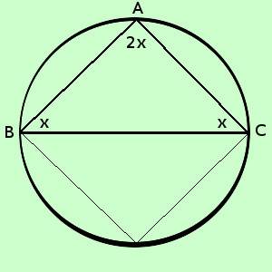

|
soluzione Risolvere il seguente problema un triangolo ha due angoli uguali fra loro ed il terzo e' uguale alla somma dei primi due; dire di quale triangolo si tratta ipotesi: due angoli sono uguali il terzo angolo e' uguale alla somma dei primi due tesi: definire il triangolo con tali angoli  chiamo x la misura del primo angolo Misura primo angolo = ABC = x Misura secondo angolo = BCA= x Misura terzo angolo = BAC = x + x = 2x Somma degli angoli interni di un triangolo = 180° ABC + BCA + BAC = 180° x + x + 2x = 180 4x = 180 x = 45 Misura primo angolo = ABC = x = 45° Misura secondo angolo = BCA = x = 45° Misura terzo angolo = BAC = 2x = 90° Si tratta di un triangolo con angoli 45, 45 e 90 gradi , cioe' del triangolo rettangolo isoscele che e' meta' di un quadrato (se ribalto la figura attorno all'ipotenusa BC ottengo un quadrato) |